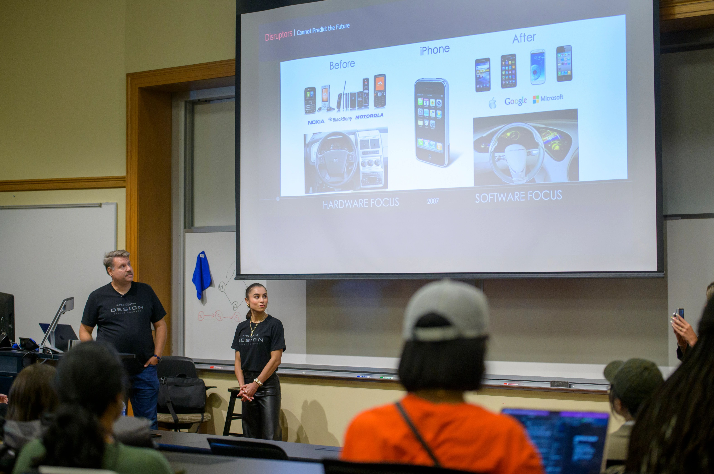

Scaffold Essential Professional Skills in Your Curriculum
The UMSI Engaged Learning Office (ELO) partners with faculty to equip students with "durable" professional competencies in teamwork, client engagement, and project management. Discover workshops, custom in-class sessions, and campus partner resources designed for easy course integration.
Request a Custom WorkshopBridging Disciplinary Learning and Professional Skills
Engaged learning challenges students to apply academic theory to unscripted, real-world problems. However, technical proficiency alone does not guarantee a successful project—students also need scaffolded support to manage client relationships, navigate team dynamics, and keep projects on schedule.
ELO workshops supplement your course content by teaching essential "durable" skills. Whether you incentivize independent student attendance or host a customized in-class session, these resources ensure your students have the practical tools they need to succeed in project-based learning environments.
“Durable” & “Essential” Skill Development Workshops

During the first month of the Fall and Winter terms, the ELO offers multiple workshop iterations focused on three core competency areas. Workshops are offered at introductory, intermediate, and advanced levels to match your course's student cohort.
Attendance Tracking for Faculty: Teaching an introductory or capstone course? With advance notice, the ELO can track and report student attendance to support course requirements or extra-credit incentives.
Core Competency Areas
Teamwork & Collaboration
- Fundamentals of teamwork & team establishment
- Team roles, dynamics, and psychological safety
- Conflict mitigation and constructive resolution
- Peer feedback mechanisms & team closeout
Client & Partner Engagement
- Fundamentals of client-facing communication
- Establishing client relationships & project bounds
- Maintaining transparent, professional touchpoints
- Deliverable handoff, transition, and project closeout
Project Management
- Fundamentals of agile and phased project management
- Project initiation, chartering, and scoping
- Execution, milestone tracking, and risk monitoring
- Deliverable packaging & project closure
Workshop Progression Levels
| Development Level | Target Student Audience | Course Alignment |
|---|---|---|
| Introductory Level | First-semester Master’s students & First-semester Juniors | Core required courses & foundational project labs |
| Intermediate Level | 2nd & 3rd semester Master’s, 2nd-semester Juniors, 1st-semester Seniors | Elective project courses & applied research units |
| Advanced Level | Final-year Master’s students & Final-semester Seniors | Capstones, client clinics & master’s thesis labs |
Custom ELO In-Class Workshops
If you prefer a tailored session delivered directly during your class time, ELO staff can customize an interactive workshop specifically for your syllabus needs.
- Flexible Timing: Sessions range from 20-minute targeted briefings to 3-hour deep-dive workshops.
- Active Learning: Every session includes hands-on exercises, scenario discussions, or tool practice relevant to your students' active projects.
Requesting an ELO Workshop
To ensure availability and content alignment, please follow these scheduling guidelines:
- Pre-Semester Requests: Submit at least two weeks before the academic term begins.
- In-Semester Requests: Submit at least one month prior to your desired workshop date.
Submit your request through the form above
Questions about workshop content or custom tailoring?
Contact Alissa Talley-Pixley, Senior Associate Director of Student Engagement, at alissat@umich.edu.
Additional Campus Partner Resources
Cross-disciplinary partner organizations across the University of Michigan offer specialized instructional support and workshop sessions that you can incorporate into your curriculum.
Ginsberg Center for Community Engagement
- Focus: Prepares undergraduate and graduate students for respectful, reciprocal community-engaged learning in civic and non-profit settings.
- Note: All first-year MSI and MHI students participate in a foundational Ginsberg workshop through SI 500.
- Action: Submit a Ginsberg Center Support Request (Please request at least 1 month in advance).
Center for Socially Engaged Engineering and Design (C-SEED)
- Focus: Educational sessions on socially engaged design, sociotechnical thinking, human-centered approaches, and community ethics in technical applications.
- Action: Explore C-SEED Educational Modules
University of Michigan Library Instructional Services
- Focus: Specialized instruction on source evaluation, special collections, literature strategies, poster presentations, data visualization, and citation management tools.
- Action: Request U-M Library Instruction